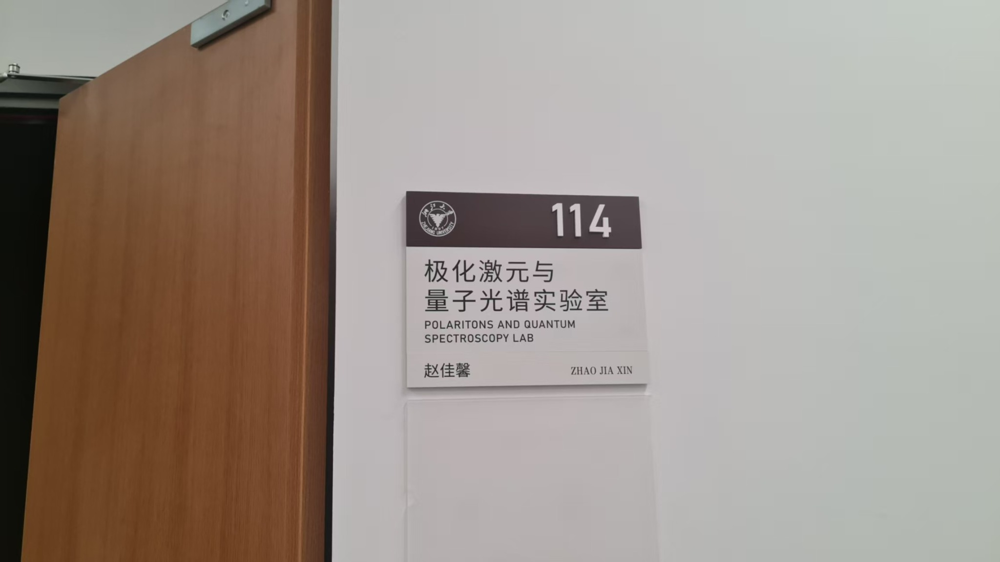

Website
Building Our Group Website
The site now includes separate English and Chinese pages for research, team members, publications, facilities and group resources.
NEWS
Research highlights, people, events and milestones from the group.
The site now includes separate English and Chinese pages for research, team members, publications, facilities and group resources.
Research and recruitment updates will be posted here.
